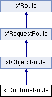

Page principale
Pages associées
Espaces de nommage
Structures de données
Exemples
Structures de données
Index des structures de données
Hiérarchie des classes
Champs de donnée
Fonctions membres publiques
|
Fonctions membres protégées
|
Attributs protégés
Référence de la classe sfDoctrineRoute
Graphe d'héritage de sfDoctrineRoute:

Fonctions membres publiques
setListQuery
(
Doctrine_Query
$query)
Fonctions membres protégées
getObjectForParameters
($parameters)
getObjectsForParameters
($parameters)
doConvertObjectToArray
($object)
Attributs protégés
$query
= null
La documentation de cette classe a été générée à partir du fichier suivant :
lib/vendor/symfony/lib/plugins/sfDoctrinePlugin/lib/routing/sfDoctrineRoute.class.php
Tout
Structures de données
Espaces de nommage
Fonctions
Variables
Généré le Wed Jun 29 2011 19:34:34 pour ELS par
1.7.1
 1.7.1
1.7.1